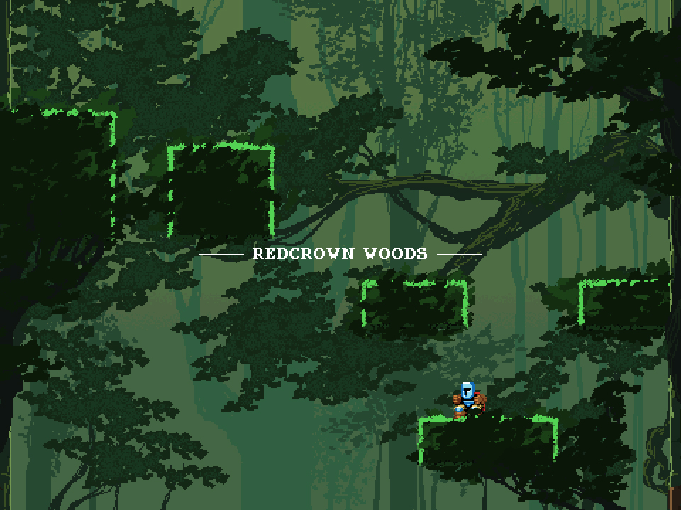
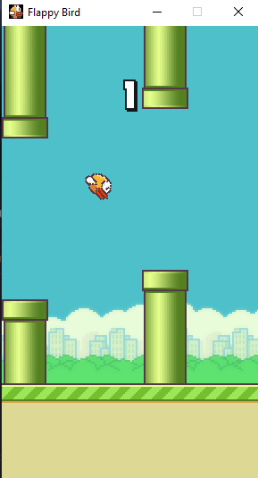

Pathfinding Visualizer
A pathfinding visualizer that I created in Python. Essentially, you can create a
choose two points in a grid map, add as many walls as you want, and then the program will
quickly find a path between those two points that doesn't move through any walls. The program
uses three different pathfinding algorithms. These include: A*, Djikstras, and Jump Point Search.
Chess
A fully playable Chess game written in Python. All functionalities work as expected, and it
also has the option to connect to a server so that you can play with your friends!

Jump King At Home
I really like Jump King and I wanted it to
be part of my learning experience. This is a near-perfect replica of Jump King. Various things are still
missing like the extras and end-game stuff. I added a few things to make the game a bit easier which include:
a checkbox to show hitboxes under the graphics menu and a flying mode triggered by pressing "C". The code is
a bit messy and there are probably a lot of bugs, but this was my first time making a project this big. It was
a lot of fun! (This link is not provided for copyright reasons)

Gitlet
Implementation of Git in Java. Curretly under construction 🚧

Python Interpreter
My own implementation of the Python Interpreter in C++. Currently under construction, but progress
is being made fast. A fully functional PEG Python parser will be coming out soon!

Flappy Bird
My first ever game that I ever made as I began learning how to program! A fully playable
version of Flappy Bird that can be played on your computer.